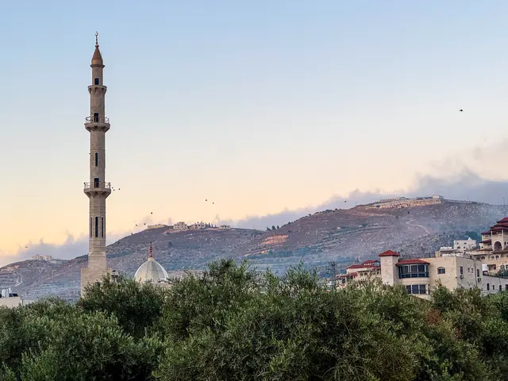

الوكالة Ajans
المعتمد حاليًا في الموقعمربّع أحمر يحمل الحرفين FA بجانب الاسم، على طريقة وكالات الأنباء المعروفة في تركيا. شعار واضح وسريع القراءة، يعمل بالقوة نفسها في رأس الموقع وصورة الحساب وأيقونة المتصفح.




الزيتون Zeytin
الاسم بأحرف صغيرة، والنقاط فوق حروف i في كلمة filistin صارت ثلاث ورقات زيتون كغصن صغير. الزيتون رمز الأرض الفلسطينية، وأخضره يرافق الأحمر في الهوية.


القبة Kubbe
شارة على هيئة قبة الصخرة: القاعدة المثمّنة العريضة ثم الرقبة ثم القبة، والحرفان FA داخل القاعدة. القدس في قلب الشعار، قريبة من وجدان الجمهور التركي.


الكوفية Kufiye
شارة سوداء بنقشة شبكة الكوفية والشريطين الأحمرين في أسفلها، عليها الحرفان FA، والاسم بأحرف كبيرة متباعدة. رمز فلسطيني يُعرف من النظرة الأولى.


بعد الاختيار
يمكن الجمع بين عناصر من أكثر من خيار، أو تعديل الألوان، أو تجربة الاسم بخط آخر. عند تثبيت الاختيار نجهّز الشعار بكل نسخه وقوالب حسابات التواصل، ونستبدله في كل صفحات الموقع.